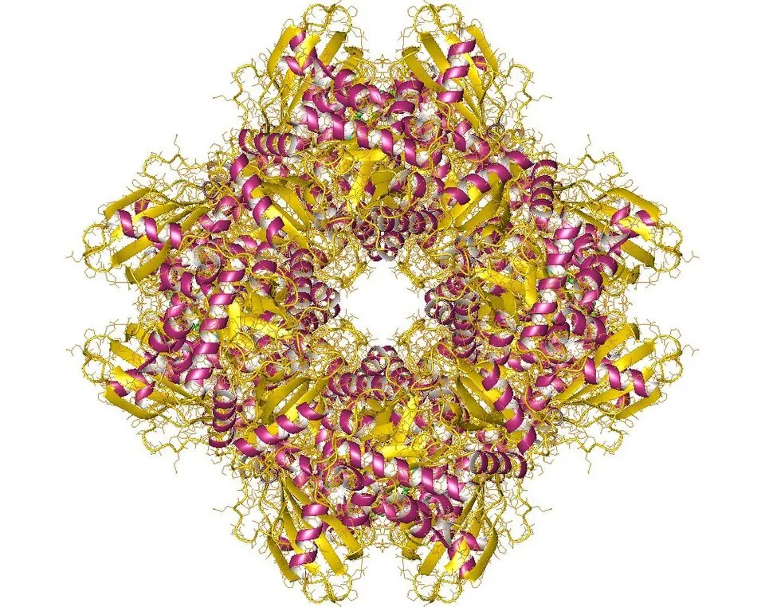
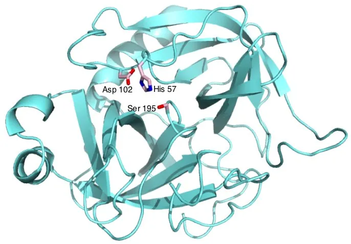
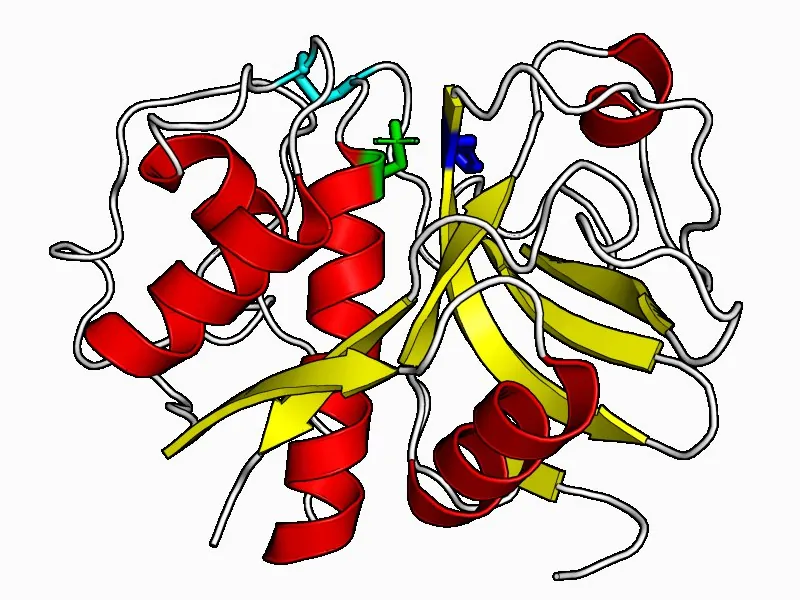
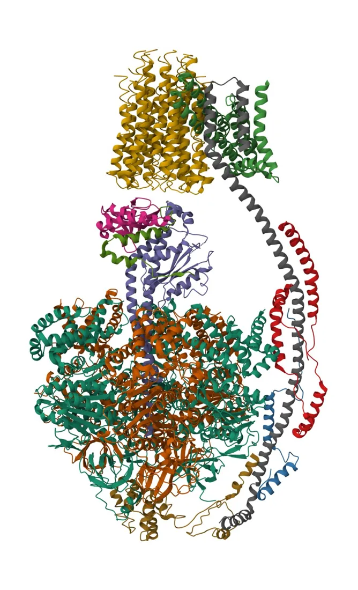
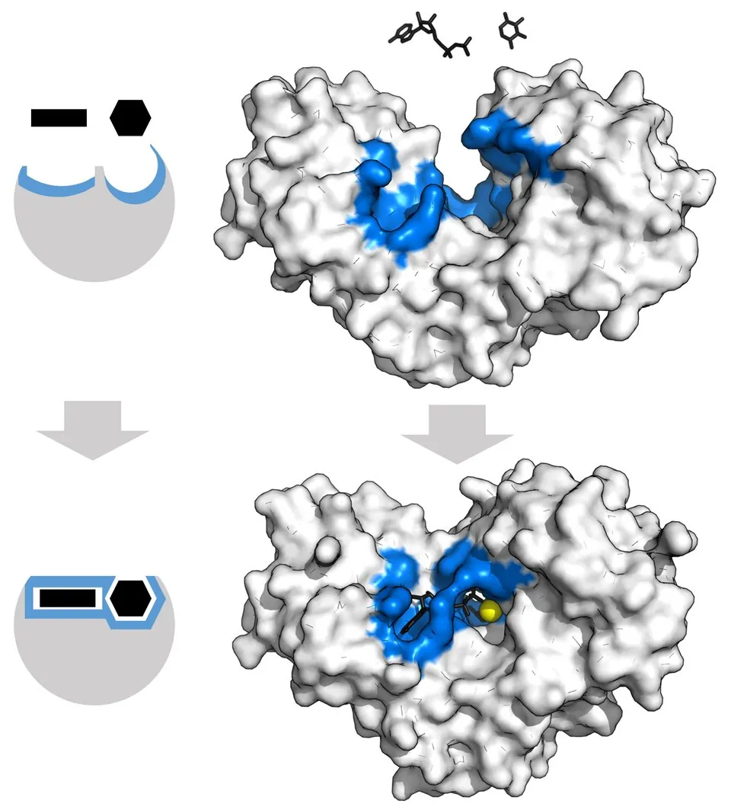
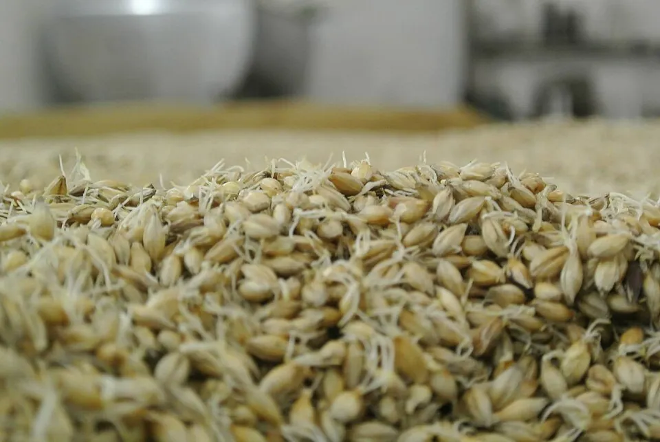
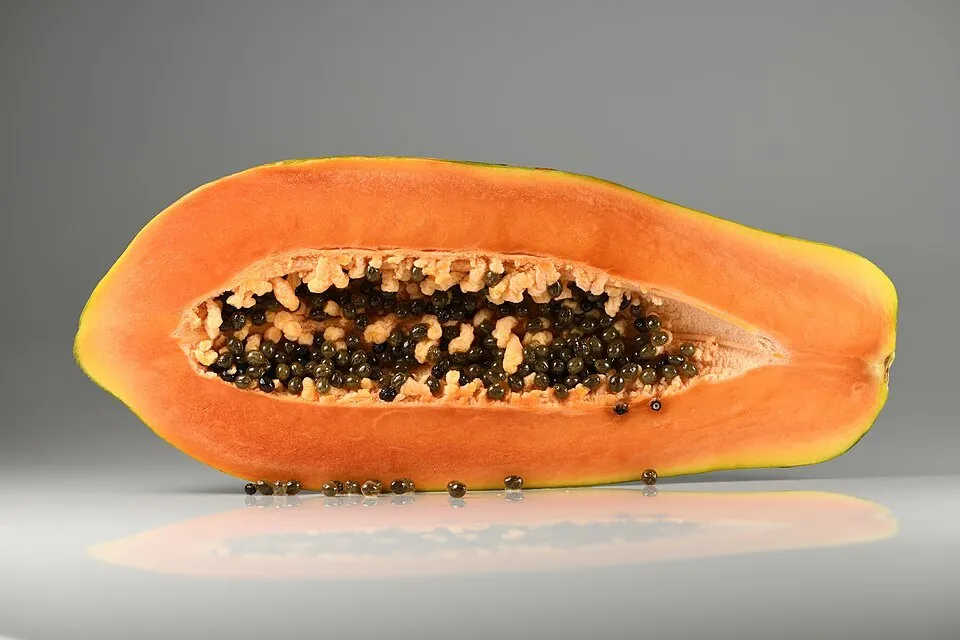
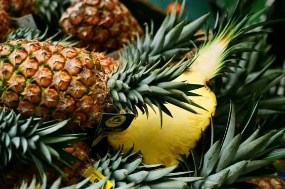
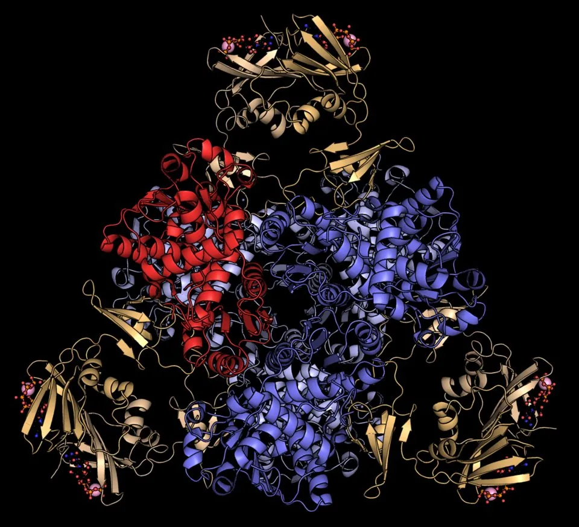
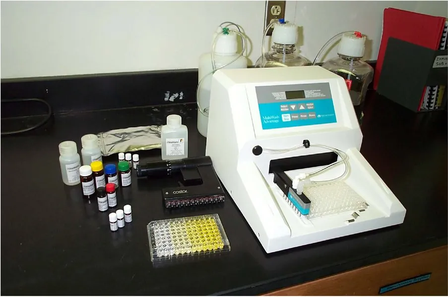

01Що таке ферменти
Ферменти (ензими) — біологічні каталізатори білкової природи. Вони прискорюють хімічні реакції обміну речовин у 10⁶–10¹⁷ разів за м'яких умов: помірної температури, атмосферного тиску й нейтрального pH. Фермент утворює з субстратом проміжний комплекс і спрямовує реакцію обхідним шляхом з нижчою енергією активації, але не змінює вільної енергії реакції ΔG і положення рівноваги — лише прискорює її досягнення.
За хімічною будовою ферменти бувають прості (лише білок: пепсин, трипсин, лізоцим, уреаза, папаїн) і складні — холоферменти. Холофермент складається з термолабільної білкової частини — апоферменту, що відповідає за вибірковість, і термостабільного небілкового кофактора, без якого каталіз неможливий.
Міцно (ковалентно чи координаційно) зв'язані з апоферментом і не дисоціюють під час каталізу: ФАД у сукцинатдегідрогеназі, гем у каталазі й цитохромах, біотин у карбоксилазах, піридоксальфосфат в амінотрансферазах.
Водорозчинні похідні вітамінів, що приєднуються до апоферменту нековалентно й оборотно лише під час реакції — переносять електрони, протони чи функціональні групи (НАД⁺, НАДФ⁺, КоА, ТДФ).
Стабілізують конформацію білка, виступають кислотами Льюїса, екранують заряди фосфатів: Mg²⁺·ATP у кіназах, Zn²⁺ у карбоангідразі, Mo у нітратредуктазі.
| Вітамін | Назва | Кофермент | Функція |
|---|---|---|---|
| B₁ | тіамін | ТДФ | декарбоксилювання α-кетокислот |
| B₂ | рибофлавін | ФАД, ФМН | перенесення електронів і H |
| B₃ / PP | ніацин | НАД⁺, НАДФ⁺ | дегідрогенази |
| B₅ | пантотенова к-та | кофермент A | перенесення ацильних груп |
| B₆ | піридоксин | ПАЛФ | амінотрансферази, декарбоксилази |
| B₇ | біотин | біотин | карбоксилази |
| B₉ | фолієва к-та | ТГФК | перенесення C₁-груп |
| B₁₂ | кобаламін | кобаламіни | мутази, метилтрансферази |


02Будова: активний і алостеричний центри
З кількох сотень амінокислотних залишків глобули безпосередньо в каталізі беруть участь лише 5–15. Вони далеко одне від одного в первинній структурі, але зближуються при згортанні поліпептидного ланцюга й утворюють функціональні центри. Натисніть на номер, щоб дізнатися про ділянку.
Каталітична тріада серинових протеаз
Класичний приклад каталітичної ділянки — тріада Ser195–His57–Asp102 хімотрипсину й трипсину. Asp102 орієнтує імідазол His57, той відтягує протон від гідроксилу Ser195, і кисень серину стає сильним нуклеофілом, що атакує пептидний зв'язок субстрату. Таку саму тріаду мають рослинні серинові протеази (субтилізиноподібні) і ліпази.




03Класифікація ферментів: КФ 1–7
За міжнародною класифікацією IUBMB кожен фермент має робочу (тривіальну) назву, систематичну назву і чотиризначний шифр КФ X.Y.Z.N: X — клас (тип реакції), Y — підклас (тип групи чи зв'язку), Z — підпідклас (природа акцептора), N — порядковий номер. Із 1961 р. було 6 класів; у 2018 р. додано 7-й — транслокази.


04Механізм каталізу та специфічність
Фермент утворює з субстратом нестійкі проміжні комплекси: E + S ⇄ ES → ES‡ → EP → E + P. Активний центр вибірково стабілізує перехідний стан, тому енергетичний бар'єр ΔG‡ стає значно нижчим, а загальна зміна вільної енергії ΔG не змінюється. За рівнянням Ейрінга кожні 5,7 кДж/моль зниження бар'єру прискорюють реакцію при 25 °C у 10 разів.
Як фермент знижує енергію активації
- Зближення й орієнтація (ентропійний фактор): субстрати фіксуються в активному центрі у вигідному положенні — імовірність продуктивного зіткнення різко зростає.
- Деформація зв'язків («диба» Полінга і Кошланда): конформаційна зміна активного центру напружує зв'язки субстрату, наближаючи його до перехідного стану.
- Кислотно-основний каталіз: радикали амінокислот (особливо імідазол гістидину, pKa ≈ 6) одночасно віддають і приймають протони.
- Ковалентний каталіз: тимчасовий ацил- чи фосфоферментний інтермедіат за участю –OH серину, –SH цистеїну або ε-NH₂ лізину.
Ключ — замок чи рука — рукавичка?
Модель «ключ — замок» Еміля Фішера (1894) уявляла активний центр жорсткою формою, точно комплементарною субстрату. Модель індукованої відповідності Деніела Кошланда (1958) показала, що активний центр гнучкий і «обгортає» субстрат лише під час зв'язування — як рукавичка руку.


| Специфічність | Критерій вибірковості | Приклади |
|---|---|---|
| Стереохімічна | Фермент перетворює лише один оптичний (D/L) чи геометричний (цис/транс) ізомер завдяки триточковій фіксації субстрату. | Фумараза діє на фумарат (транс), але не на малеат (цис); оксидаза L-амінокислот — лише на L-ізомери. |
| Абсолютна | Активний центр комплементарний одній речовині; будь-яка зміна радикала унеможливлює каталіз. | Уреаза гідролізує лише сечовину; аргіназа — лише L-аргінін; Рубіско приймає тільки RuBP. |
| Відносна (групова) | Фермент атакує певний тип зв'язку в широкій групі субстратів. | Пепсин, трипсин, папаїн гідролізують пептидні зв'язки різних білків; ліпаза — естерні зв'язки ацилгліцеролів. |
05Вплив pH і температури
Швидкість ферментативної реакції залежить від іонізації функціональних груп білка та збереження його нативної конформації. Кожен фермент має свій оптимум pH — діапазон, у якому іоногенні групи активного центру (–COO⁻, –NH₃⁺, –SH, імідазол) мають каталітично активний заряд. Ферменти рослин пристосовані до свого компартменту: вакуолярні гідролази активні при pH ≈ 5, ферменти строми — при pH ≈ 8, якого вона досягає на світлі.
Залежність активності від pH
Температурний оптимум і теплова денатурація
На висхідній гілці кривої підвищення температури на 10 °C прискорює реакцію в 1,5–2 рази (правило Вант-Гоффа, Q₁₀). Вище 42–50 °C руйнуються слабкі зв'язки третинної структури, і фермент необоротно денатурує; при охолодженні активність падає без руйнування структури (принцип кріоконсервації). Термофільна бактерія Thermus aquaticus синтезує Taq-ДНК-полімеразу з оптимумом 72–75 °C — основу полімеразної ланцюгової реакції.






06Кінетика та інгібування
Залежність початкової швидкості реакції від концентрації субстрату в стаціонарному стані описує рівняння Міхаеліса — Ментен (1913):
Vmax = kcat·[E]₀ — швидкість при насиченні всіх активних центрів; Km — концентрація субстрату, за якої V₀ = ½Vmax; що менша Km, то вища спорідненість ферменту до субстрату. Друге рівняння — лінеаризація Лайнуівера — Берка.
Інгібітори — метаболіти, ліки, токсини, гербіциди, що вибірково гальмують фермент. Тип зворотного інгібування визначають за графіками Лайнуівера — Берка при кількох концентраціях інгібітора: де перетинаються прямі, те й змінилося — Vmax чи Km. Оберіть тип інгібування і змінюйте параметри.
Крива Міхаеліса — Ментен
Подвійні обернені координати Лайнуівера — Берка
| Тип | Механізм | Кінетика | Приклади |
|---|---|---|---|
| Незворотне | Міцний ковалентний зв'язок з функціональними групами активного центру (–OH серину, –SH цистеїну); діаліз активність не повертає. | Ефективна [E]₀ падає: ↓Vmax, Km = const | Фосфорорганічні отрути (зарин, ДФФ) — ацетилхолінестераза; аспірин ацетилює ЦОГ; гліфосат блокує EPSPS рослин. |
| Конкурентне | Структурний аналог субстрату займає вільний активний центр (E + I ⇄ EI); усувається надлишком субстрату. | Vmax = const, ↑Km (Kmapp = αKm); прямі перетинаються на осі 1/V | Малонат — сукцинатдегідрогеназа; сульфаніламіди конкурують з ПАБК; статини — ГМГ-КоА-редуктаза; O₂ конкурує з CO₂ за Рубіско. |
| Неконкурентне | Інгібітор зв'язується поза активним центром і з E, і з ES з однаковою константою (Ki = Ki′). | ↓Vmax, Km = const; спільна точка на осі −1/Km | Аланін і ATP щодо піруваткінази; глюкозо-6-фосфат щодо гексокінази; іони важких металів щодо SH-ферментів. |
| Безконкурентне | Інгібітор приєднується лише до комплексу ES, утворюючи неактивний ESI. | Пропорційно ↓Vmax і ↓Km; паралельні прямі | L-фенілаланін щодо кишкової лужної фосфатази; мікофенолова кислота щодо ІМФ-дегідрогенази. |
| Змішане | Зв'язується з E і з ES, але з різною спорідненістю (Ki ≠ Ki′). | ↓Vmax, Km зростає чи зменшується; перетин у II або III квадранті | Багато лікарських інгібіторів мультисубстратних дегідрогеназ. |
07Алостерична регуляція та активування
Ключові (швидкість-лімітуючі) ферменти на початку метаболічних шляхів і в точках розгалуження мають олігомерну будову й алостеричні центри. Для них характерна кооперативність: зв'язування молекули з однією субодиницею змінює конформацію сусідніх. Тому крива насичення не гіперболічна, а S-подібна (сигмоїдальна) з коефіцієнтом Хілла nH > 1.
Усі субодиниці перебувають у рівновазі між двома станами — напруженим T (низька спорідненість) і релаксованим R (висока). Перехід синхронний, «усе або нічого». Активатори стабілізують R, інгібітори — T.
Ліганд змінює конформацію спершу однієї субодиниці, а та через контакти полегшує (позитивна кооперативність) чи утруднює перехід сусідніх; можливі гібридні стани.
Кінцевий продукт гальмує перший фермент шляху: ізолейцин — треоніндезаміназу, лізин — аспартаткіназу, триптофан — антранілатсинтазу. Ранній метаболіт активує пізній фермент: фруктозо-1,6-бісфосфат — піруваткіназу.


Шляхи активування ферментів у клітині
Незворотне відщеплення маскуючого пептиду відкриває активний центр.
Пепсиноген → пепсин, трипсиноген → трипсин, каскад згортання крові; у рослин — дозрівання цистеїнових протеїназ вакуолі.
Оборотне приєднання фосфату до OH-груп Ser, Thr, Tyr протеїнкіназами та відщеплення протеїнфосфатазами.
Глікогенфосфорилаза; у рослин — сахарозофосфатсинтаза, нітратредуктаза (темнова інактивація), ФЕП-карбоксилаза (активація у C₄ і CAM).
Оборотне роз'єднання регуляторних і каталітичних субодиниць під дією вторинних месенджерів.
Протеїнкіназа A (R₂C₂ + цАМФ → 2C); Ca²⁺-кальмодулін-залежні кінази; Рубіско-активаза знімає інгібітори з Рубіско.
Швидке приєднання коферментів і катіонів (секунди) або тривала індукція транскрипції (години — доби).
Амілаза слини активується Cl⁻; тіоредоксин відновлює дисульфіди ферментів циклу Кальвіна на світлі; гібереліни індукують α-амілазу в алейроновому шарі зерна.
08Практичне значення


Активність органоспецифічних ферментів у плазмі крові: МВ-креатинкінази, АСТ, ЛДГ₁ при інфаркті міокарда; АЛТ при гепатитах; α-амілази при панкреатиті.
Замісне й фібринолітичне застосування ферментних препаратів: панкреатин, пепсин, тканинний активатор плазміногену, стрептокіназа, аспарагіназа.
Понад 45 % лікарських засобів — інгібітори ферментів: інгібітори АПФ, статини, інгібітори ЦОГ, тирозинкіназ, вірусних протеаз.
Гербіциди — інгібітори ферментів, яких немає у тварин: гліфосат (EPSPS), сульфонілсечовини (ацетолактатсинтаза), глюфосинат (глутамінсинтетаза). Ферментні препарати й активність амілази визначають якість зерна і солоду.
09Контрольні питання
Чим холофермент відрізняється від апоферменту?
Що таке активний центр і з яких ділянок він складається?
Що означає шифр КФ 4.1.1.39?
Чи змінює фермент константу рівноваги реакції?
Чим модель індукованої відповідності відрізняється від моделі «ключ — замок»?
Що характеризує Km?
Як за графіком Лайнуівера — Берка відрізнити конкурентне інгібування від неконкурентного?
Чому крива насичення алостеричного ферменту S-подібна?
Чому ферменти строми хлоропласту мають оптимум при pH ≈ 8?
10Література
- Губський Ю. І., Ніженковська І. В., Корда М. М. та ін. Біологічна хімія : підручник. — Вінниця : Нова Книга, 2021. — 648 с.
- Гонський Я. І., Максимчук Т. П., Калинський М. І. Біохімія людини : підручник. — Тернопіль : Укрмедкнига, 2001. — 736 с.
- Тимошенко О. П. Ферменти ; Вороніна Л. М. Алостерична регуляція // Фармацевтична енциклопедія. — Київ : МОРІОН.
- Кобилінська Л. І., Макаренко Т. М. та ін. Біологічна хімія (ч. 1) : навчальний посібник. — Львів : ЛНМУ ім. Данила Галицького, 2022.
- Анацький А. С. Методичні вказівки з дисципліни «Біохімія» (класифікація, механізм дії та кінетика ферментів). — Кам'янське : ДДТУ, 2020.
- Robinson P. K. Enzymes: principles and biotechnological applications // Essays in Biochemistry. — 2015. — Vol. 59. — P. 1–41.
- Strelow J. et al. Mechanism of action assays for enzymes // Assay Guidance Manual. — Bethesda : NCATS, 2012.
- Pesaresi A. Mixed and non-competitive enzyme inhibition: kinetic models and mechanisms // J. Enzyme Inhib. Med. Chem. — 2023.
- Einav T., Mazutis L., Phillips R. Statistical mechanics of allosteric enzymes // J. Phys. Chem. B. — 2016. — Vol. 120. — P. 6021–6037.
- IUBMB Enzyme Nomenclature (ExplorEnz), включно з класом 7 — транслокази (2018).